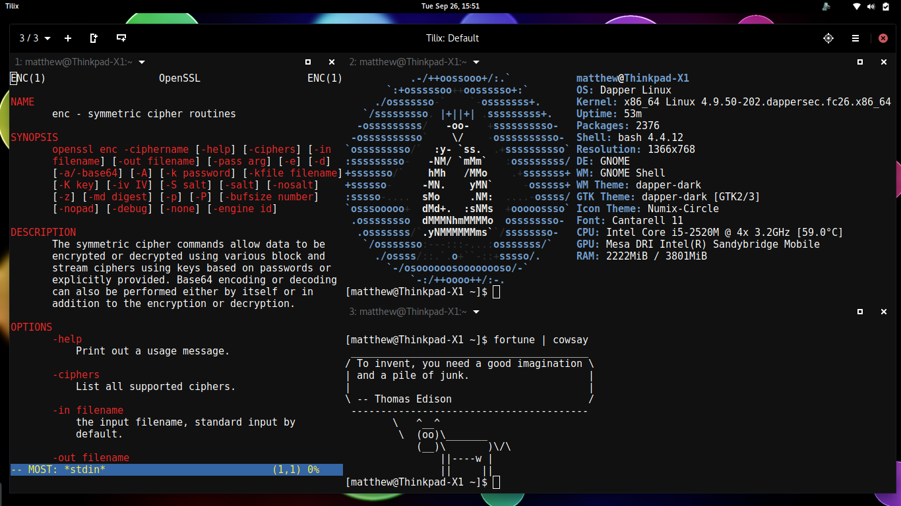

It's time to announce the availability of Dapper Linux 26, the latest release of the flagship secure operating system by Dapper Linux Limited. Dapper Linux 26 is filled with all sorts of great features designed to bring you an easy to use operating system with excellent security.
I'm still super excited and happy to be creating the Linux distribution of my dreams. A world where security meets usability, and Dapper Linux is leading the way. - Matthew Ruffell, Founder.
New in Dapper Linux 26:
The default installer has been changed from Anaconda to Calamares, in an effort to make the install process less confusing, more streamlined and more secure. Calamares also implements full hard disk encryption better than Anaconda did, which is the greatest benefit. Before, Anaconda would only encrypt the main partition and leave the bootloader plaintext. Now, Calamares creates a full LUKS container, and inside places the primary partition and the swap partition. The boot partition is omitted and is merged in the primary partition. The LUKS image is unlocked with a keyfile, which is decrypted by grub2, which means you only need to decrypt the disk once, compared to twice beforehand. Its a win win for system usability and security, so Calamares is here to stay!
Thunderbird has been swapped for Evolution, since Evolution better supports GPG out of the box, and actually has plugins which work with exchange servers, making it easier to users to cope those kinds of mailservers.
The default terminal has been changed from gnome-terminal to Tilix, a tiling terminal that follows the Gnome human user guidelines. It is well built and absolutely improves efficiency. Give it a go!

The sandboxing framework, Oz, has been updated to the latest version and has many bugfixes and speed improvements, which helps with stability and usability. Expect sandboxes to launch faster than ever before! The application firewall, fw-daemon, has also been updated to the latest release, and features Oz integration, UDP protocol support and more! The team over at Subgraph have made excellent progress with their software, keep up the great work!
On the kernel side of things, Linux has been updated to >= 4.9.49 with the latest security fixes. Marking applications with PaX information has been moved from the older way of replacing the GNU stack headers with PaX headers to using extended file attributes. This means it is easier to change the PaX attributes of a file, especially if it is in use, and also means the files are no longer modified, so their checksums still match, which helps verify programs integrity and rebuild delta RPM packages.
A whole assortment of software has been updated, such as Dapper Hardened Browser now being brought up to version 55, and includes updates to all addons used as we prepare to migrate fully to web extensions for version 57, coming in November. The theme, dapper-dark has also been partially rewritten and now integrates better with the new gnome-shell. Saying that, moving to the new Fedora 26 base grants updated applications, such as Gnome 3.24, LibreOffice 5.3.6,
There are also numerous changes under the hood, such as optimising kickstarts and the like, and the new inclusion of intrusion detection systems such as rkhunter and chkrootkit, so have a dig around!
As always, get in contact if you like Dapper Linux or have any suggestions. It's great to hear feedback from users!